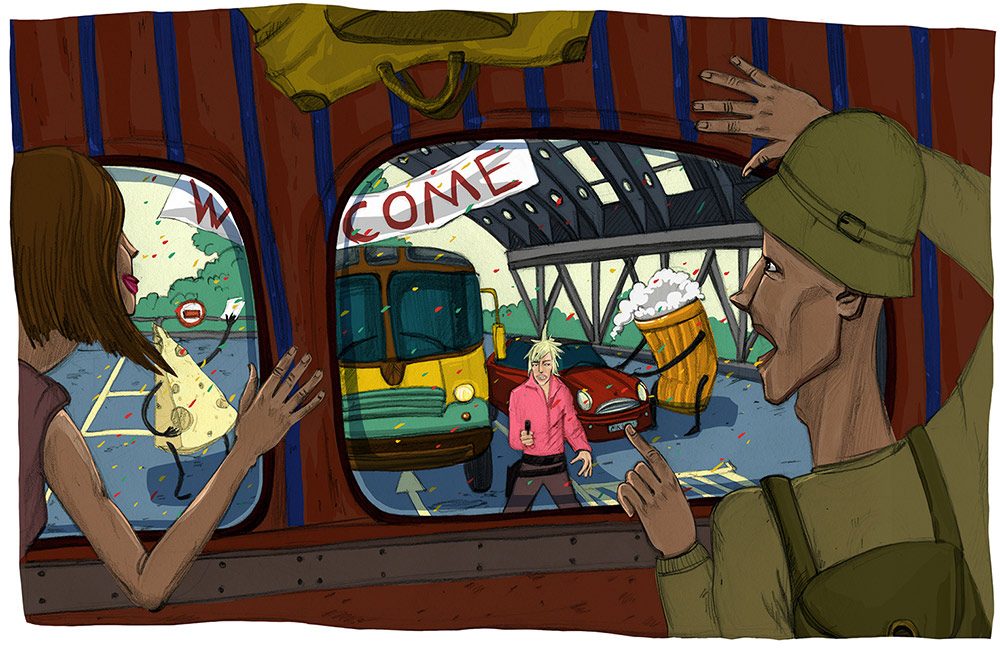
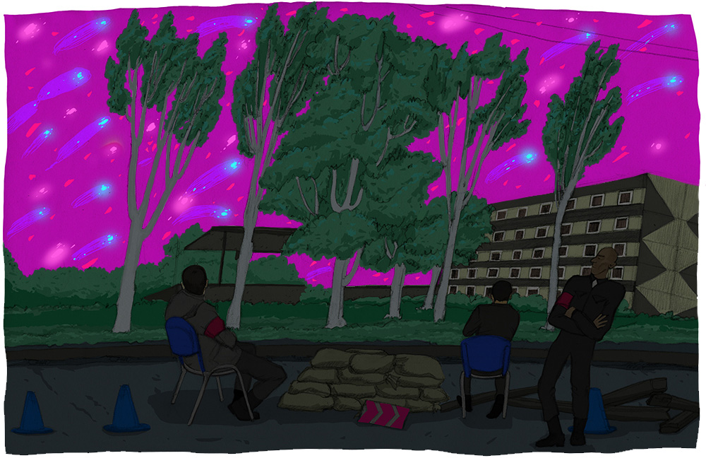
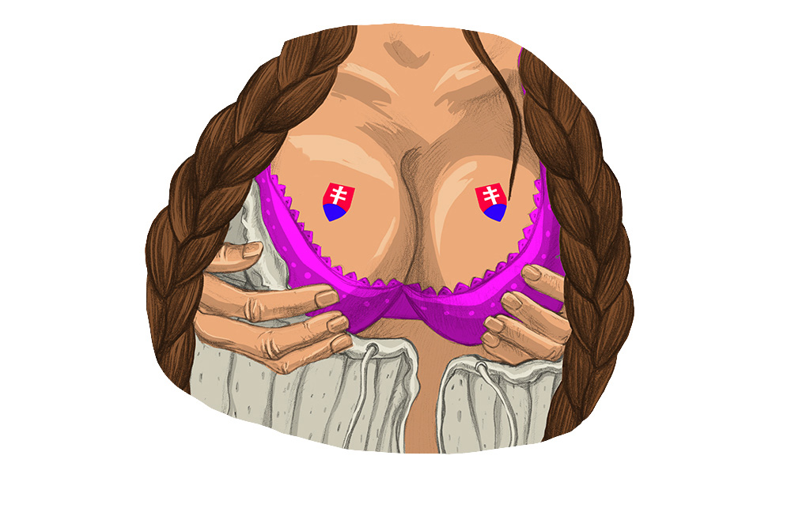

Польскі прафесар Вальдэмар Кулігоўскі спрабуе пазнаёміць польскіх чытачоў з сучаснай палітычнай сітуяцыяй у суседняй Славакіі. Яго эсэ ў польскім выданні ResPublica базуецца на працы славацкага даследчыка Юрая Бузалькі. Цікава, што Славакія застаецца малавядомай краінай не толькі для беларусаў, але і для палякаў. Шмат у чым мы бачым і беларускую рэчаіснасць: страх перад іншаземцамі, ператварэнне нацыяналістычных ідэй у расісцкія, эксплуатацыя гістарычнага мінулага на карысць ідэалогіі палітычных сіл.
Што мы ведаем пра Славакію і славакаў? Гэтае пытанне знішчальна рытарычнае. Такое блізкае суседства і такая падобная да нашай мова не служаць ні збліжэнню, ні паглыбленню знаёмства. Краіна паміж Карпатамі і Дунаем застаецца для нас белай плямай.
У падтрымку гэтага сцвярджэння магу прывесці важкі аргумент. Нядаўна я правёў сярод вучняў апытанне, якое датычыцца ведаў і асацыяцый, звязаных са Славакіяй. Яе вынікі адназначныя. Рашучая большасць была няздольная назваць хаця б аднаго вядомага славака ці славачку. Тыя, хто сцвярджаў адваротнае, напісалі ў адпаведнай рубрыцы Яношыка, Румцайса, Эндзі Уорхала, Уладзіміра Мэч’яра і Яна Муху (калісьці брамніка сталічнай Легіі). Гэта, безумоўна, не спіс, які імпануе, тым больш, што ў ім знаходзіцца прадстаўнік чэскай культуры; гэтая блытаніна чэскасці і славацкасці аказалася, зрэшты, шырока распаўсюджанай.
Просьба назваць вядомыя славацкія вырабы зноў не прынесла плёну: альбо адсутнічалі адказы, альбо пачынаўся асацыятыўны панос пра добрае піва, горны сыр, Ленцількі, Горалькі, шакаляд «Студэнцкі», Бехераўка, Слівовіца, біжутэрыя. Славакія з’яўляецца для нас часцей за ўсё транзітнай краінай па дарозе на Балканы, вабіць магчымых турыстаў гарамі і замкамі. Апытаныя асобы не ведаюць асабіста ні славакаў, ні славачак, як правіла, не могуць назваць ні аднаго нацыянальнага стэрэатыпа, з імі звязанага. Часам з’яўляліся меркаванні, што славакі «гасцінныя», «такія ж, як палякі», «больш рэлігійныя за чэхаў» альбо «баязлівыя». Першыя асацыяцыі са Славакіяй — гэта горы, Яношык, добрае піва, гарачыя крыніцы, але таксама соевыя прадукты, Швейк, еўра і цыгане.
Што чуваць за мяжой?

Не трэба сябе падманваць, мы не цікавімся Славакіяй, у параўнанні з квітнеючай чэхаманіяй гэтая краіна паўстае амаль як заморскі архіпелаг. Няма ніводнага стэрэатыпа, нават негатыўнага, які б датычыўся Славакіі і яе жыхароў. Польшча і Славакія знаходзяцца побач, але разам з тым — асобна. Улічваючы той факт, што напрацягу 20 год мы суседнічаем з незалежнай Славакіяй, разам утвараем Вышаградскую групу і падобна перажываем чарговыя гістарычныя падзеі, варта — хоць час ад часу — праверыць, што адбываецца за мяжой.
Вельмі добрай нагодай да такога звароту з’яўляецца кніга Юрая Бузалькі «Славацкая ідэалогіяSlovenská ideológia a kríza. Eseje z antropológie polityky і крызіс. Эсэ па антрапалогіі палітыкі». Тым больш, што меркаванні і дыягназы аўтара трапна каментуюць і польскую рэчаіснасць (трэба дадаць, што кніга з’явілася ў братыслаўскім выдавецтве “Kalligram”, якое праграмна папулярызуе грамадскія навукі, але кіруе сваю дзейнасць да славацкіх венграў).
Праца, якая мае ў сваёй назве слова «крызіс», павінна закранаць сучасныя праблемы, у тым ліку эканамічныя, і робіць гэта ўсё вельмі арыгінальна. Аўтар не мае на ўвазе толькі крызіс, які пачаўся ў 2008 годзе. Цвяроза заўважае, што кожная вялікая трансфармацыя грамадстваў Цэнтральнай Еўропы ў XIX i XX стагоддзях была крызісам. На яго думку, грамадскія трансфармацыі прымаюць выгляд крызісу, які датычыцца таксама іх ідэалагічнага значэння і гістарычнага сэнсу. Першым такім трансфармацыйным крызісам была індустрыялізацыя, якая стварыла новых грамадскіх актараў: працаўнікоў, сялян, «гарадскіх», «вясковых». Іншым крызісам і адначасова трансфармацыяй было стварэнне народу і народнай дзяржавы. Трэцім трансфармацыйным крызісам, які зазналі людзі гэтага рэгіёну, быў пераход ад дзяржаўнага сацыялізму да капіталізму ў яго неаліберальнай фазе.
Большасць палітолагаў, гісторыкаў, сацыёлагаў ці псіхолагаў, якія займаюцца палітычным жыццём Славакіі, безрэфлексійна паўтараюць формулы заходніх даследчыкаў трансфармацыі, якія не маюць ніякага дачынення да яе ўмоў і шляхоў развіцця. Згодна з найбольш папулярнай тэорыяй, у выніку мадэрнізацыі рэлігійнасць пераходзіць у прыватную сферу, губляючы сваё сацыяльнае значэнне. «Гэтыя канцэпцыі, — піша Бузалька, — не бралі пад увагу спецыфіку краінаў былога ўсходняга блоку». Канец сацыялізму ў гэтым рэгіёне быў прычынай адваротнай сітуацыі: пытанне рэлігійнасці з прыватнай сферы перайшло ў палітычную, заняўшы ў апошняй уплывовае месца. «Такія краіны, як Славакія альбо Польшча, якія сваё існаванне пасля 1989 года звязалі з дамінуючай рымска-каталіцкай рэлігіяй, безумоўна, не з’яўляюцца добрымі прыкладамі пацверджання мадэрнізацыйных тэорый», — каментуе славацкі даследчык.
Пакуль Славакія не пазбудзецца страху перад уласнай шматэтнічнасцю, датуль не будзе добрым месцам для жыцця
Крызіс трансфармацыі паказаў сваё парадаксальнае аблічча не толькі ў выпадку рэлігійнасці. Тое ж адбылося і з нацыянальнай ідэнтыфікацыяй. Абедзве паводле прагнозаў павінны былі слабець і згасаць, але тым часам не губляюць прывабнасці. Шмат іх аб’ядноўвае, як піша Бузалька. Калектыўныя пачуцці, як рэлігійныя, так і нацыянальныя, патрабуюць выразных сімвалаў. Яны маюць таксама свае «залатыя часы», ці то ў біблійным раі, ці то ў эпоху Вялікай Маравіі, ці ў вялікадзяржаўнай Рэчы Паспалітай, ці ў часы Святога Стэфана — на гэтыя топасы спасылаюцца нацыяналісты са Славакіі, Польшчы і Венгрыі.
У заходнееўрапейскіх акадэмічных колах, як заўважае Бузалька, паволі знікаюць спрэчкі пра мультыкультуралізм. Тым часам у Славакіі і ў суседніх краінах толькі пачынае фарміравацца погляд пра шматкультурнасць, які прымае форму спрэчак пра мультынацыяналізм. Для Славакіі, якая з’яўляецца пасля Украіны найбольш этнічна і нацыянальна дыферэнцыяванай краінай сярод суседзяў, гэтыя спрэчкі маюць ключавое значэнне. Не толькі ў лакальным памеры, але і ў міжнародным. Чаму? Улады Славакіі ўжо шмат год спрабуюць упэўніць сербаў, што ніколі не прызнаюць незалежнасць КосаваАлбанскія ўлады Косава аднабакова абвясцілі незалежнасць ад Сербіі пры падтрымцы ЗША ды іншых краін ЕС 17 лютага 2008 г. Расія незалежнасць не прызнала. 
На мапе з Вікіпедыі бачныя краіны, якія афіцыйна прызналі незалежнасць Косава. Акрамя таго, Славакія — адзіная краіна Еўразвязу, якая забараняе пераходзіць мяжу асобам з косаўскім пашпартам. Безумоўна, за гэтымі рашэннямі не стаіць нейкая асаблівая любоў да Сербіі. Бузалька тлумачыць гэта страхам перад прызнаннем шматэтнічнасці ўласнай дзяржавы, галоўным чынам перад сепаратычнымі памкненнямі венгерскай меншасці, якая, па меркаванні нацыяналістычнага асяроддзя, магла б пайсці па шляху косаўцаў. Свядомасць мультынацыяналізму, што толькі нараджаецца, занадта слабая, каб уплываць на палітычныя рашэнні. «Пакуль Славакія не пазбудзецца страху перад уласнай шматэтнічнасцю, датуль не будзе добрым месцам для жыцця», — піша Юрай Бузалька.
Зварот да мінулага

Сіла прыцягнення нацыяналізму часта мае карычневы колер. Славацкія нацыяналісты адкрыта ўшаноўваюць ксяндза Ёзафа ЦісаЛідар Славацкай Народнай Партыі, якая выступала за аўтаномію Славакіі ў межах Чэхаславакіі. У 1939 Ціса обвясціў незалежнасць Славакіі пад патранажам Трэцяга рэйха. Пасля гэтага нямецкія вайска акупавалі Чэхію. У 1942 годзе Ціса падпісаў закон пра дэпартацыю габрэяў. У 1945 Ціса збёг у Баварыю, дзе быў затрыманы амерыканскай арміяй ды ў 1947 прысуджаны на павешанне., прэзідэнта прафашысцкай Славацкай Рэспублікі, раздаюць цукар, які «не паходзіць ад габрэя», б’юць цыганоў, пагражаюць венграм, маючы яшчэ досыць часу, каб дапамагаць сваім пабрацімам з Сербіі. У горадзе Раец на цэнтральным пляцы плануюць паставіць помнік Фердынанда Дзюрчанскага, антысеміта і міністра ў цісаўскай рэспубліцы. Зварот да мінулага, нават вельмі далёкага, стаў ў Славакіі спосабам вядзення сучаснай палітыкі. Хутка нараджаюцца новыя міфы: пра тое, што Вялікая Маравія — гэта дзяржава-родапачынальнік сучаснай Славакіі, што ад князя Святаполка паходзіць славацкі народ, які ў сваю чаргу з’яўляецца непасрэдным спадкаемцам Кірыла і Мяфодзія. Апошняе павінна было змясціць Славакію ў кола візантыйскай культуры, аднак у нацыянальнай ідэалогіі ўлічваюцца эмоцыі, а не факты.
Бузалька заўважае, што ў славацкай палітыцы існуе выразная сімпатыя да памерлых. Увесь час узнікае спрэчка, каго з памерлых дапусціць да нацыянальнага пантэону, а каму забараніць уваход у яго. Думка, што «самыя вялікія правадыры — правадыры мёртвыя» дазваляе рабіць усё больш патэтычныя высновы. Гэта, як пераканаўча піша славацкі аўтар, «сучасная славацкая палітычная некрафілія», засяроджаная на тых асобах, якія сёння выглядаюць як «палітычна sexy».
Нечакана высветлілася, што пахавальны абрад можа быць формай легітымізацыі новай палітычнай традыцыі. Маляўніча распавядае пра гэта раздзел пад назвай «Палітычнае жыццё парэшткаў Мілана Годжы». Годжа — міжваенны палітык, прэм’ер Чэхаславакіі, дзеяч Славацкай нацыянальнай Партыі. У 2002 г. яго парэшткі былі перавезеныя з Чыкага. Машыну, якая везла іх на могілкі, суправаджалі вучні гімназіі, урну паставілі ў касцёле евангелістаў, перад ім кнігу з выказанымі спачуваннямі, а перад гэтым усім — паліцыю. У мясцовым тэатры адбыўся спектакль, які адпавядаў сітуацыі, была арганізаваная сустрэча з унукам нябожчыка, а ў афіцыйнай прамове падкрэсліваўся ўнёсак Годжы ў развіццё Славакіі як чальца Еўразвяза і НАТА. Урачыстасці скончыліся народнай музыкай і мясцовым віном. «Славакія выказвае пашану вёсцы», — чулася адусюль. І нават калі Годжа не стаў героем масавага ўяўлення, то «кан’юнктурная некрафілія і аграрная палітычная праграма могуць знайсці ў ім велізарныя рэзервы».
Нацыянальная славацкая вёска

У гэтым кантэксце важна, што адзіная сучасная славацкая геапалітычная канцэпцыя, якая суадносіцца з Міланам Годжам, мела праграмна аграрны характар. Гэта мае сваё значэнне, бо дамінуючая славацкая палітычная ідэалогія выразна ідэалізуе вясковы свет. У адрозненні ад касмапалітычных гарадоў, адкрытых чужым ўплывам, букалічная вёска павінна была застацца свойскай, непарушна славацкай, нацыянальнай. Гэта не дзіўна, бо славацкі пераход ад самадастатковых сялян да сучаснага прамысловага народу, як нагадвае Бузалька, знайшоў адлюстраванне ў першую чаргу ў адносінах «горад-вёска». Існаванне вялікай (мяркуецца, шчаслівай) сям’і звязана з вясковым жыццём, а індывідуалізм, секулярызм і іншаземцы асацыююцца з жыццём у горадзе. Мяжа паміж горадам і вёскай стала своеасаблівай мяжой паміж светамі. Цнатлівасць і аўтэнтычнасць жыве сёння ў асцыпкахТрадыцыйны славацкі татранскі авечы сыр эліптычнае формы. Вырабляецца са сьвежага салодкага сыру, які набіваюць у драўляныя круглыя формы і пакідаюць на пэўны час., брынзе і жалейках пастухоў. «Славакія працуе на тое, каб стаць рустыкальным музеем Еўропы», — дадае аўтар, а згаданая ва ўводзінах анкета толькі пацвярджае гэты погляд. Больш за тое, па яго ацэнках славацкі «этнабізнес» мае фашысцкае аблічча, а мяжа паміж цнатлівасцю вясковай ідыліі і нацыяналізмам постаграрнага грамадства сёння амаль незаўважная.
У падобным тоне і на падобныя тэмы выказваецца белградскі этнолаг Іван Чолавіч. У вядомых кнігах «Палітыка сімвалаўIvan Čolović. Bałkany. Terror kultury.» і «Балканы: тэрор культуры», перакладзеных на польскую мову, ён паказаў знішчальную сілу культуры, якая не столькі ўзбагачае, колькі асляпляе і робіць абыякавым. Нацыяналістычныя ідэалогіі, якія знаходзяць моц у вясковасці і святой веры продкаў, прыводзілі да забойстваў і гвалтаў, здзейсненых у іх імя. Эсэ Бузалькі маюць падобны палемічны характар, агаляюць слабасці славацкай палітыкі, яе схільнасць да міфізацыі і сімпатыю да жыцця хутчэй у «клаустраполісе» ніж касмаполісе. Не бачу прычынаў, па якіх не належала б чытаць іх як варыянт аповесці пра нас саміх і пра наш палітычны дух. Нам таксама не чужое бачанне спакойнай, вясёлай вёскі, і ў нас трымаецца гарачка гістарычнай палітыкі, для нас таксама вызначальнымі сталі пахавальныя абрады апошніх год. Адзіная розніца — венгры, якія для нас міфічныя браты, у Славакіі ўспрымаюцца як безупынная пагроза. Аднак не выключана, што Віктар ОрбанПрэм'ер-міністр Венгерскай Рэспублікі (1998-2002, 2010-...). Лідар хрысціянска-дэмакратычнай партыі Фідэс - адной з двух найбуйных палітычных партый Венгрыі. пераадолее гэты невыносны парадокс.